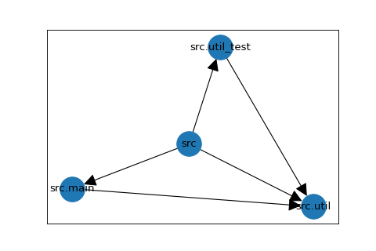
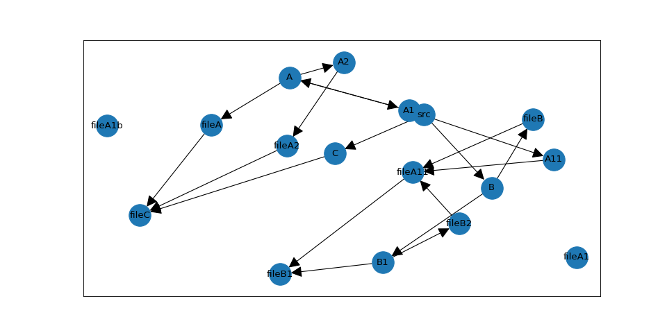

General Concept
PyTestArch creates an Abstract Syntax Tree for each Python file it scans. It then extracts only the information about module imports from the AST and converts them to an internal representation. This is currently a graph supplied by the NetworkX library.
When the user defines a rule and evaluates the internal representation against it, the rule is converted into a set of graph operations that are then carried out on the previously generated graph.
Generating the evaluable architecture representation
When scanning and processing the requested modules, PyTestArch executes the following step:
1) Parse all files starting at the requested module_path. This only takes python source files into account that are not explicitly excluded.
2) Convert the generated AST into custom dependency representations. In this step, it is ensured that all internal modules (either importing or imported) receive their fully qualified name.
3) Generate a list of all modules that were parsed. This list is used to differentiate between external and internal dependencies (external dependencies will not have been parsed).
4) If not requested otherwise, external dependencies will be filtered out.
5) If external dependencies should be included, they will be added to the list of modules.
6) The dependency representations are converted to a graph structure.
Simple Example
Parsing all files
Consider the following project structure:
my_project/
src/
main.py
util.py
util_test.py
Both main.py and util_test.py are importing a util function defined in util.py; no other imports exist.
With "my_project" as the project's root folder and "src" as the folder to evaluate, this will create the following graph:

Each module has a direct path to all submodules, in this case: "src" is connected to all three modules it contains, "src.main", "src.util", and "src.util_test".
In addition, a module that imports another module has a directed edge linking it to this module. For example, "src.main" imports "src.util" and therefore the graph has an edge connecting these modules, with the arrow head pointing at the imported module, in this case "src.util".
Excluding some files
In the example above, the util_test.py file is included in the graph and will be considered when evaluating the architecture.
If certain files should be excluded from the analysis, this can be done by specifying an exclusion pattern. In our example,
if we want to exclude util_test.py, we could use:
from pytestarch import get_evaluable_architecture
evaluable = get_evaluable_architecture(
"/home/my_project",
"/home/my_project/src",
exclusions=(),
regex_exclusions=(r".*_test\.py",),
)
More complex example
As a basis for describing the query language, let's consider a more complex example:
/test_project
/src
__init__.py
/A
__init__.py
fileA.py
/A1
__init__.py
fileA1.py
fileA1_b.py
/A11
__init__.py
fileA11.py
/A2
__init__.py
fileA2.py
/B
__init__.py
fileB.py
/B1
__init__.py
fileB1.py
fileB2.py
/C
__init__.py
fileC.py
With the following list of imports:
- fileA imports fileC
- fileA11 imports fileB1
- fileA2 imports fileC
- fileB imports fileA11
- fileB2 imports fileA11
- fileC imports the built-in os module
This creates the following graph (excluding all __init__.py):

Note that the module names in the diagram have been abbreviated: For example, the node "fileA" is actually named "src.A.fileA".
Most of the edges in this graph are due to parent-child relationships between the modules. However, five of the six import relationships defined above are present in the graph - only fileC has no connection to an "os" node; in fact, there is no node named "os" at all.
This has been achieved by setting the exclude_external_libraries flag in the get_evaluable_architecture function. All modules that
are not located hierarchically below the root path, in this case "test_project", will be excluded from the graph.
Module not found in graph
If a rule references a module that does not appear in the dependency graph, PyTestArch raises a ModuleUnknown error with an actionable message. Common causes are:
- External library excluded: the module belongs to a third-party package and
exclude_external_libraries=True(the default). Passexclude_external_libraries=Falsetoget_evaluable_architecture()to include it. - Module never imported: the module exists but is not imported by any code under the scanned
module_path, so it was never added to the graph. - Misspelled module name: module names in rules must match the fully qualified import name (e.g.
mypackage.service, notservice).
Additional Notes
root_path vs. module_path in get_evaluable_architecture
The root_path should point towards the most top level module. In the example above, this would be src - not test_project,
as test_project is not the top level code directory.
The module_path is the module where the dependency scan will start. It has to be either identical to root_path or
a submodule of it.
Module names
In all rules, modules have to be referred to by their fully qualified name, meaning relative to the root_path - not the
module_path! This helps to distinguish between internal and external modules.